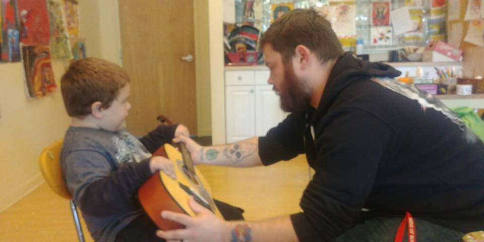

Music Therapy
Get Involved With The Movement Now
Hey, this is Nathan and I'm currently attending school for music therapy. I also work at a day-hab center where I use music therapy with people who have varying disabilities. I very strongly believe in the positive effects music can have and want to share it with others.
After World War II, the United States Army funded research into music therapy for veterans, and this is where modern day music therapy got its start. Music therapy has been used in the military to help veterans recover from both the physical and emotional trauma of war. A large focus of music therapy has always been on people (typically veterans) with Post Traumatic Stress Disorder (PTSD), but now it is widely recognized that music therapy is beneficial for many other disorders as well.
Music therapists have the important role of observing emotional reactions and providing proper interventions using music. It is important to get music therapy through a trained individual because they are taught to be able to maintain a safe and controlled environment for the people receiving music therapy.
For more information on music therapy, visit the American Music Therapy Association
For resources on music therapy for veterans, try some of these sites: